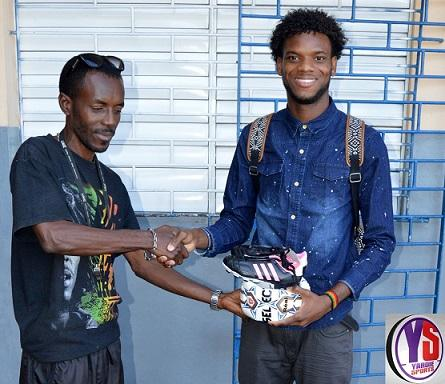
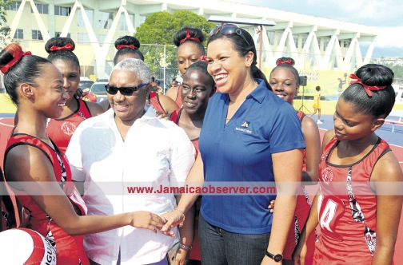

UWI Footballer Shamal Thomas Gives back to his Alma Mater. 
Superb performance just now by Pelican Christopher Powell in the NAGICO 50Over cricket match against Trinidad & Tobago. Powell in his first regional competition for CCC grabbed a career best of 5 wickets for 22 runs from 7 overs including wickets of International cricketers Dwayne and Darren Bravo. Well Done Chris
Superb performance just now by Pelican Christopher Powell in the NAGICO 50Over cricket match against Trinidad & Tobago. Powell in his first regional competition for CCC grabbed a career best of 5 wickets for 22 runs from 7 overs including wickets of International cricketers Dwayne and Darren Bravo. Well Done Chris
Pelicans, help us Congratulate our fellow pelicans who have been selected to represent the Combined College and Campuses (CCC) cricket team in the Regional 50 Over Competition. They are: James McDonald, Paul PalmerJr, Rovman Powell and Christopher Powell. They are 4 of 7 Jamaicans selected to the 15 member team which will be Captained by another pelican Chadwick Walton who is completing Post Graduate studies at the Cave Hill campus. Congrats and All the best
UWI Pelicans crush Jobs Lane in JN Open League netball - Have a read. 